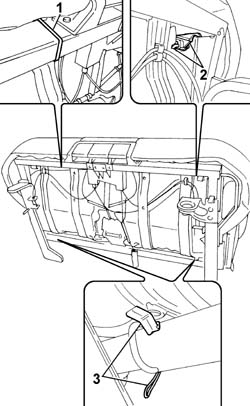
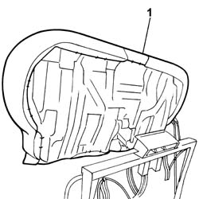

7050C11 Single CUSHION of sliding rear seat - S.R.
- Path
- Procedures > 70 FITTINGS > 7050 REAR SEATS > 7050C SLIDING REAR SEATS > 7050C11 Single CUSHION of sliding rear seat - S.R.
- Kind
- repair procedure (removal / refitting; the operation number is the code)
- Applies to
- all engines; all production periods
- Interactive page
- https://sloeber94.github.io/elrnDB-fPnd/en/#/2753290
Applies to: all engines; all production periods
 Removing
Removing
 Refitting
Refitting7050C05 Single sliding REAR SEAT with split folding squab - R.R .
1. With the seat at the bench and resting on a clean surfact to prevent staining the fabric, cut the two plastic bands.
2. Release the upper fastening clips.
3. Release the lower fastening clips.

Applies to: all engines; all production periods
1. Remove the one-piece cushion assembly from the frame, also releasing it from the rear seat belt rods.

Applies to: all engines; all production periods
Refitting
RemovingFit the one-piece cushion assembly in the housing on the frame, taking care to position the rear seat belt rods correctly in the actual cushion housings.
Attach the upper and lower cushion clips to the frame.
Using new plastic bands, fasten the cushion to the frame near the seat moving handles.
7050C05 Single sliding REAR SEAT with split folding squab - R.R .
Topics linked from this page (2)
Topics that link to this page (7)
- 7050A15 SPLIT rear. seat RIGHT BACKREST- R.R.
- 7050A63 Rear seat/ backrest. - movement control LEVERS R.R.
- 7050A67 Rear seat sliding control DEVICE from luggage compartment - R.R.
- 7050A74 Rear seat BACKREST locking/release CABLE - R.R.
- 7050A75 Rear seat sliding control CABLE - R.R.
- 7050C21 COVER of sole cushion of sliding rear seat - R.R.
- 7065B15 ANCHORAGE ROD for one rer seat belt. on sliding rear seat frame , (one) left or right - R.R.